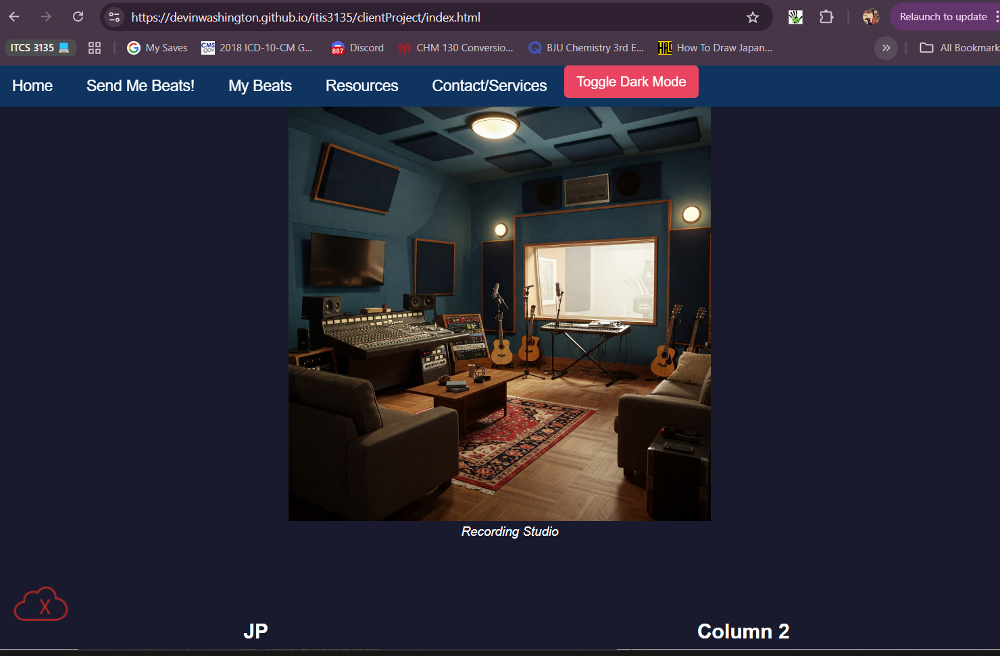

Review Page Washington, Devin of Client Project
Client Project: Jp Productions
JP Productions
Design Review
CRAP Principles
- Contrast - The contrast for the body and heading are distinct, as the heading is a lighter blue than the body. More contrast could be made by making the footer another color.
- Repetition - For different elements on the site they all repete the same styling, for instance his hyperlink buttons are all red. He did a good here
- Alignment - Most of the page has text to the left, despite this the alignment of sections allow for users to navigate across the page with ease.
- Proximity - Elements in the main body are close together usually in forms, the only place this could be helped or fixed is the footer as it could look like it apart of the main page instead of being separated by a nav bar. The header is separated by its nav bar from the elements of each page.
Page Structure
- All pages have headings, main body, and footers that all have the same nav bars
- All main pages forms start with h2 heading
- The footer is there but needs more distinctness to be differentiated from the main body elements.
Validation
- Some HTML Validation warnings.
- Image warnings as they need to be optimized.
- CSS Validation warnings.
Specfic Requirements
- Has four links to different pages in heading navigation bar.
- Site needs a slogan on each page.
- Has dynamic feature of slideshow on homepage.